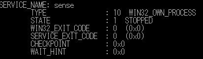

こんにちは Azure Security サポートチームです。
この記事では Microsoft Defender for Endpoint(MDE)にオンボードされたデバイスをイメージ化して展開したり、複製する場合に実施いただく必要がある手順と注意事項についてまとめます。
この手順は、主に以下の例に挙げるシナリオで重要になる場合があります。
- MDE にオンボードしたことがあるデバイスをイメージ化し、複数のマシンに展開して使用する場合
- MDE にオンボードしたことがあるデバイスをゴールデン イメージとして VDI にデプロイする場合
- MDE にオンボードしたことがあるデバイスにて、ホスト名やドメイン名の変更を伴う構成変更を実施する場合
- MDE にオンボードしたことがあるデバイスにて、Sysprep ツールなどによる一般化を行った場合
- MDE にオンボード済みの仮想マシンをクローンする場合
MDE にオンボードしたデバイスをイメージ化する場合の留意事項
Microsoft は、お客様の環境を保護するために、セキュリティの強化に継続して取り組んでいます。
Microsoft Defender は、悪意ある攻撃者によるクライアントのなりすましを防止するために、不審な通信を検出するセキュリティ対策機能をご用意いたしております。(参考情報：Microsoft Defender のセキュリティ強化について)
ここで、MDE にオンボードしたデバイスをイメージ化して展開したり複製したりする場合、展開されたデバイスの通信が、疑わしいクライアント通信として MDE に検出される問題が発生する既知の制限事項があります。
そのため、MDE にオンボードしたデバイスをイメージ化いただく場合には、以下の手順にて MDE のオフボードと端末情報の削除を実施いただく必要があります。
※ すでに MDE からオフボード済みのデバイスをイメージ化する場合にも以下の手順を実施する必要があります。
※ 以下の手順を実施せずにデバイスを複製いただいた場合、ご利用環境で問題が発生した場合の復旧に時間を要する可能性がありますこと、ご留意くださいますようお願いいたします。
※ 仮想デスクトップインフラストラクチャ (VDI) 用のイメージを作成いただく場合は、 非永続的な仮想デスクトップ インフラストラクチャ (VDI) デバイスのオンボード の記載も併せてご参照ください。
デバイスのオフボードと端末情報の削除手順
Windows OS を MDE からオフボードして情報を削除する
Windows OS を MDE からオフボードして情報を削除する場合は以下の手順を実施します。
- 以下の公開情報で案内しているいずれかの手順を使用してデバイスを MDE からオフボードします。
※ すでにデバイスがオフボードされている場合、この手順をスキップします。
- 手順1：ローカル スクリプトを使用してデバイスをオフボードする | Microsoft Learn
- 手順2：グループ ポリシーを使用してデバイスをオフボードする | Microsoft Learn
- 手順3：モバイル デバイス管理ツールを使用してデバイスをオフボードする | Microsoft Learn
- デバイスのオフボード完了後、コマンドプロンプトで以下のコマンドを実行し、 sense のサービスが停止していることを確認します。
1 | sc query sense |
デバイスが正常にオフボードされ、サービスが停止している場合、以下の出力例のように [STATE] 行に [STOPPED] と表示されます。

https://download.sysinternals.com/files/PSTools.zip から、PsExec.exe ツールをダウンロードし、展開します。
管理者権限でコマンドプロンプトを起動し、PsExec.exe ツールを使用して以下のコマンドを実行します。
1 | PsExec.exe -s cmd.exe |
- [4.] の手順により SYSTEM アカウントで起動したコマンドプロンプト画面にて、以下のコマンドを順に実行します。
1 | cd "C:\ProgramData\Microsoft\Windows Defender Advanced Threat Protection\Cyber" |
※ 誤ったファイルやレジストリキーを削除しないようご留意ください。また、事前にバックアップを取得いただくことを推奨いたします。
- ダウンロードした PsExec.exe ツールを含むファイルを必要に応じて削除し、OS を再起動します。
以上が、MDE にオンボードしたデバイスをイメージ化または複製いただく前に実施いただく必要のある作業です。
なお、本記事の内容は、作成時点でのものであり、予告なく変更される場合があります。
MDE にオンボードしたデバイスのイメージ化や複製についてのご不明点については、弊社サポート窓口までお問い合わせください。
参考情報：Microsoft Defender のセキュリティ強化について
Microsoft は、2022 年 3 月に CVE-2022-23278 に対処する更新プログラムをリリースしました。
この更新プログラムは、悪意のある攻撃者がクライアントになりすましをして、クラウド上の MDE サービスと接続を行う攻撃に対するセキュリティを強化します。
このセキュリティ強化には、クラウド上の MDE サービスに対する疑わしいクライアント通信を検出する機能が含まれます。このような疑わしいクライアント通信は、デバイスのなりすましや重複したデバイス ID が原因で発生する可能性があります。